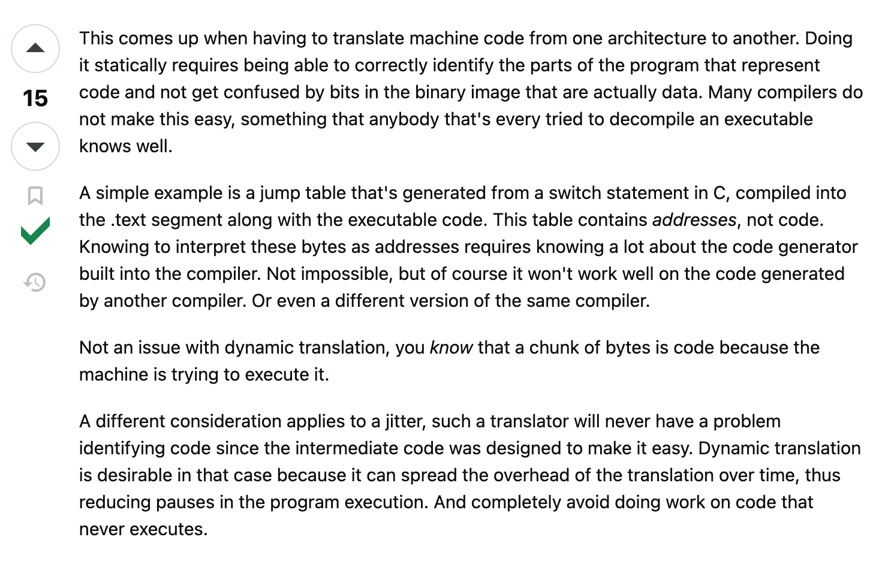

I Was Reincarnated as a 6502 CPU After Accidentally
Emulating Myself
(Now I Have Trust Issues)
$
hexdump -C
What_Is_Emulation
The process of recreating one computer system, device, or software
environment on another system
-
Recreating the hardware behavior of another machine
-
Translating instruction meant for original system into ones your
current system understands
-
Lets softwares (eg, games, operating systems) run as if they were
on their native platform
? How is Emulation different from Simulation
| Type |
Description |
Example |
| Emulator |
Mimics the actual hardware behavior. High
accuracy.
|
QEMU |
| Simulator |
Models behavior or logic, not necessarily
the hardware. Approximate accuracy.
|
Matlab & Simulink |
My First Emulator
-
First emulator: John GBA (Android)
-
Played Pokémon Emerald extensively.
-
Over-leveled Swampert (Level 90+).
-
Could defeat Ice-types with just Muddy Water!
How to emulate?
-
An emulator has to be designed taking in accounts
for the internal architecture of the computer.
-
All modern computers are based on von neumann
architectures, i.e., a bus connected to CPU, memory
and other devices. A bus is bunch of electric line
that help in connecting.
CPU emulation
-
A big problem is the CPUs, memory devices, sound
devices, etc. all work in parallel, but almost all
emulators use to be implemented for monoprocessor
machines so devices cannot be emulated in parallel.
// Fetch-decode-execute loop
while (run) {
executeCPU(cycles_to_execute); // Simulated CPU: fetch, decode, execute
generateInterrupts(); // Simulate hardware interrupts
emulateGraphics(); // Simulate graphics processor
emulateSound(); // Simulate sound hardware
emulateOtherSoftware(); // Simulate other software
timeSynchronization(); // Keep emulator speed real-time
}
The CPU is the core of the emulation and it is used
to mark the time of the emulation. Many computers
have hardware which introduce time into their system
(for example timers and interrupts driven by
timers), but the main method to know about the time
in a computer is the same executed instruction time
in the CPU (counting the CPU cycles). That is the
way the emulator main loop takes into account the
time.
Two types of CPU emulation :
- Interpreted emulation
- Binary translation
- Static binary translation
- Dynamic binary translation

Link to the question
interpreted emulation
-
In interpreted emulation we get the intruction codes
- decode what they mean - and execute the function
of the decoded instruction.
-
A basic CPU reads bytes from an address of the
memory pointed by a special register (PC or Program
Counter).
-
The more basic CPUs (and also Virtual Machines like
Java), have at least two registers, the PC and the
SP.
fetch decode loop
-
Gets a byte for some bytes from memory which are
located in a position pointed by a special register
(PC).
-
The SP, or Stack Pointer, is a pointer to the
memory. It is used to keep a stack data structure,
that is, a FIFO (First In First Out) structure which
is useful for retrieving the last data added to the
structure. The SP is decremented and incremented as
new values are pushed or popped to the stack.
-
Those CPUs, called stack machines
-
Byte or group of bytes which define a single
instruction are called opcodes
opcode examples
- 1000 1XXX (Intel 8080 instruction)
- 1000 1XXX → add REG
- 1 byte instruction
- XXX is a 3 bit reg code
-
function : adds a general purpose registrator to
accumulator (special register)
- eg; ADD B : 10001000
| XXX |
Register |
| 000 |
B |
| 001 |
C |
| 010 |
D |
| 011 |
E |
| 100 |
H |
| 101 |
L |
- SUBQ.B # data, Dn
- It stands for subtract quick
-
It subtract a small number (1-8) from a data
register
C trick in emulators to access the same register data in
multiple ways
typedef union
{
UINT32 w; /* Access it as a 32-bit value (maybe for full register set) */
UINT16 w; /* Access it as a 16-bit value */
struct
{
UINT8 l, h; /* Low and High byte parts */
UINT16 pad; /* Padding for little-endian alignment */
} b; /* Access as two bytes */
} i8080Reg;
Using this, registers can be accessed as:
- A 32 bit value
- A 16 bit value
- Two separate bytes (low and high parts).
This is useful because some instructions operate on 8
bit while others on 16 bit registers
Instruction Emulation
Here we need to take ISA (Instruction set architecture)
of CPU, and reproduce in the language we are
implementing the algorithm in
instruction (operands){
get_operands;
perform_calculations;
store_result;
update_time;
return to the main loop / fetch next opcode;
}
Flags
-
One of the harder takes to emuate using a high level
language
-
In most CPUs, the result of an operation (like ADD,
SUB, AND, etc.) isn't just the number you get — the
CPU also updates a set of flags that describe
properties of the result.
-
Flags are single bit variables or registers which
are set after some arithmetic or logic instructions.
Common in 8 bit and 16 bit CPU, also in many modern
COPU (like, x86).
-
This is because most of the times a single
instruction changes more than one flag, so, it
becomes harder to handle.
-
Some examples of flags are carry, zero, sign flag,
etc.
-
Emulating flags is quite expensive because you're
replicating hardware's parallel work in sequential
software.
-
You often end up with multiple if statements per
flag. ach if can become a branch/jump in the
compiled code — and modern CPUs hate unpredictable
jumps because they break instruction pipelines.
-
This won't be a problem if your host CPU (the one running the emulator) has
similar flags to your guest CPU (the one you're
emulating). eg 8080 and x86 have similar flags.
Memory
Memory emulation can be slow because
-
Memory access is extremely common. Every instruction
needs to fetch its code, and many need to read/write
data
-
The access logic is complex. In software, the
emulator must check every time what kind of memory
is being accessed. Some addresses points to ROM, I/O
registers, some are special banks that map to
different physical pages at different times
-
This may involve scanning lists, calling functions,
handling bank switching, and simulating MMU
behavior.
Other performance concerns
-
Alignment Checks - Some CPUs
forbid multi-byte reads/writes to unaligned
addresses (e.g., reading a 32-bit word from address
0x0001). You must check and raise that exception
-
Endianness conversion - If the
emulated CPU uses a different byte order (big-endian
vs. little-endian) than the host then every
multi-byte read/write needs byte swapping
Modern CPUs and MMU
Modern CPUs have:
- Virtual Addresses – seen by running programs
- Protection
- Memory-mapped devices
They are managed by the Memory Management Unit (MMU)
When emulating such CPUs, you also have to emulate the MMU, which is slow because:
- Every memory access may involve a translation step
- Access rights need to be checked
- Page faults/exceptions must be handled
Translational step?
CPU instruction asks for a virtual address → a page table finds the physical location → read/write that physical memory.
Remember: MMU does all this in parallel, but you can’t while emulating XD
Interrupts
Both interrupts and exceptions temporarily stop what the
CPU is currently doing so it can run special code to
handle an event
-
Hardware interrupts Generated by hardware outside
the CPU (e.g., keyboard, timer, network card) and
sends to the CPU through dedicated pins on the
control bus.
-
Exceptions are generated inside the CPU when it
detects a problem during instruction execution. eg,
divide by zero, illegal opcode
How interruption is handled?
-
Stop execution at the current PC (Program Counter).
-
Save PC and sometimes other CPU state (registers,
flags) in memory or special registers.
-
Jump to the interrupt handler (special code that
deals with the event).
-
When handler finishes:
- Restore saved state.
- Resume execution from where it stopped.
As you might have guessed, interpreted emulators are
slow . I know a way to make them faster:
- write them in assembly instead.
-
But there are some problems with that as well -
- The emulator is not portable without rewriting the CPU core (tradeoff between portability and performance).
- Another implementation exists to increase performance — threaded emulators.
- Instead of interpreting one instruction at a time, it decodes it once and stores a pointer for reuse.
- Faster, but less portable code.
- Not all C compilers can do this — some need inline assembly or special features.
Binary translation
Interpreters reads on instruction decodes it, and
executes. While, Binary translation is the act of converting the guest machine code into equivalent host machine code, so the host can run it directly.
-
Translates small blocks while running, caches them, and reuses them if needed.
-
Only translates code that actually executes.
-
Speeds up emulation compared to interpreting
instructions one-by-one.
Two main types:
Static binary translation
-
Translate the entire program before running it.
-
Like translating a whole book before reading.
-
Can be faster because translation is done once,
but harder with complex or self-modifying code.
Dynamic binary translation
-
Translate instructions while the program runs
(just-in-time).
-
Like translating a speech as it happens. More
flexible, adapts to dynamic code, but adds
overhead during execution.
QEMU uses dynamic binary translation to run ARM code on
x86 machines.
ありがとう
Made with ❤️ by Saksham
Checkout this amazing explanation video: